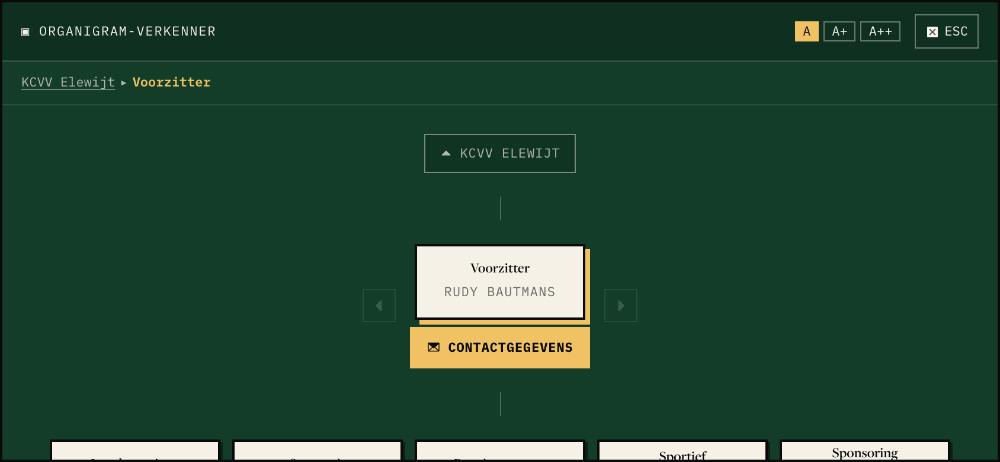
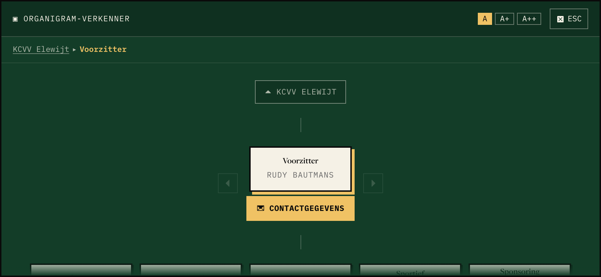
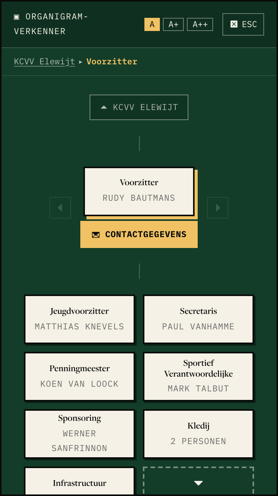
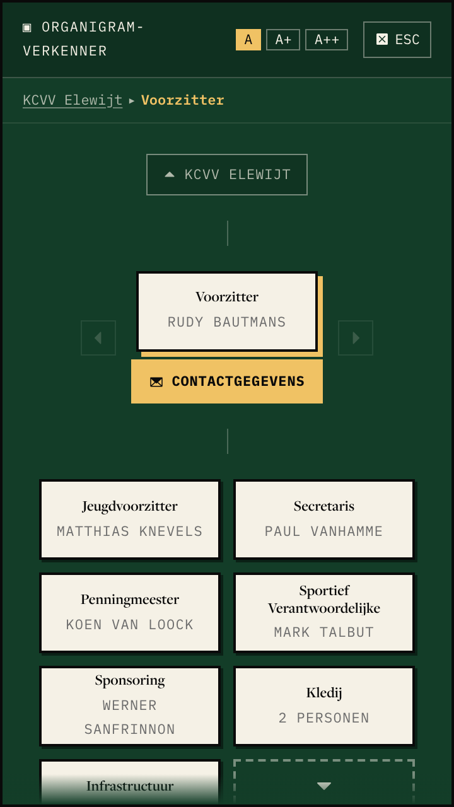
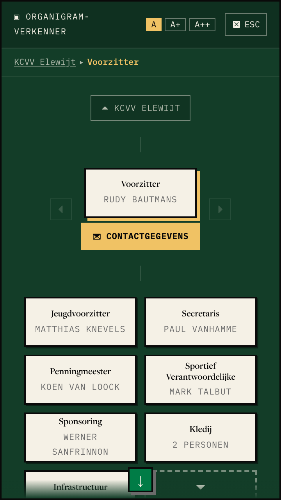
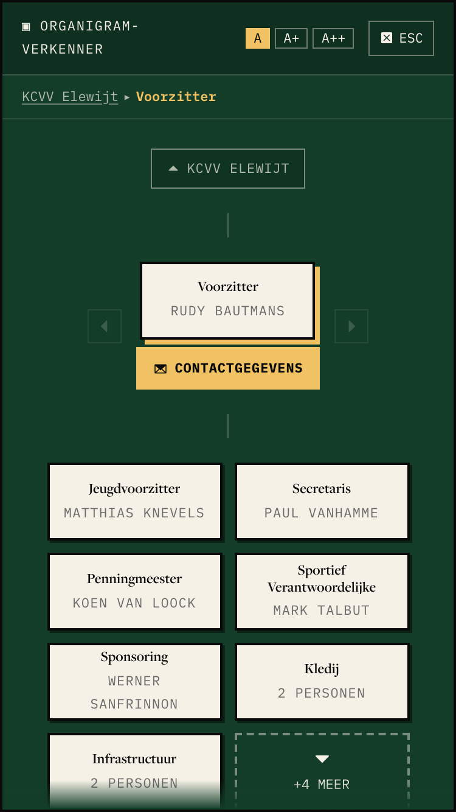
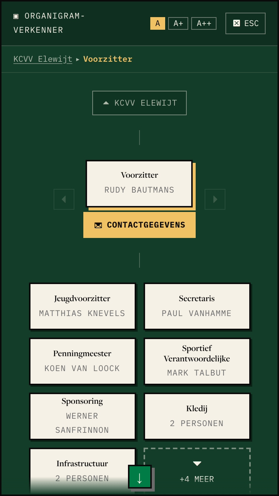
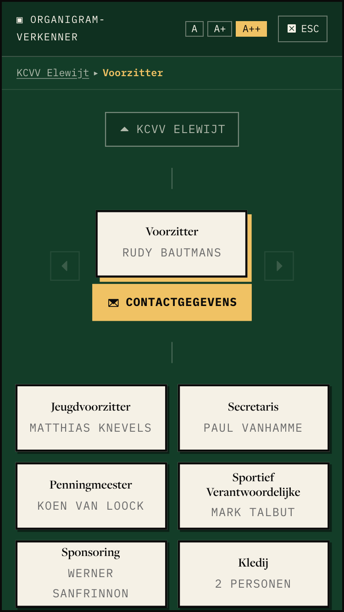
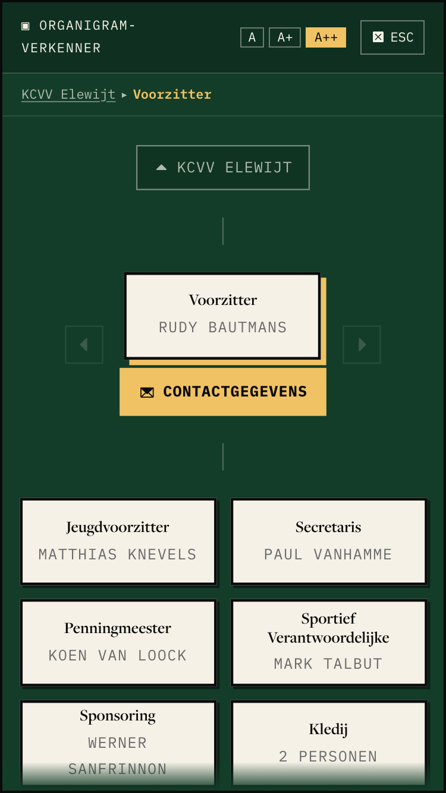
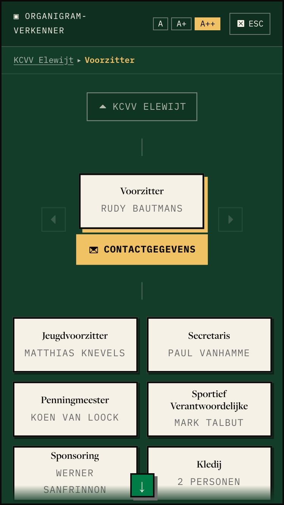

<title>Explorer Down-Cue</title>
<link rel="preconnect" href="https://fonts.googleapis.com">
<link rel="stylesheet" href="https://fonts.googleapis.com/css2?family=IBM+Plex+Mono:wght@400;600&family=Source+Serif+4:opsz,wght@8..60,400;8..60,600&display=swap">
<style>
/* Layout: one row per viewport scenario, three options side by side, phone shots narrow, landscape full width */
:root {
  --bg: #f4efe3; --fg: #1a1a1a; --muted: #5b5a52; --line: #1a1a1a; --accent: #0f5a32; --chip: #e6dfcd;
  --display: "Source Serif 4", Georgia, serif; --mono: "IBM Plex Mono", ui-monospace, Menlo, monospace;
}
@media (prefers-color-scheme: dark) { :root:not([data-theme="light"]) { --bg: #12241a; --fg: #efe9da; --muted: #a9b3a4; --line: #efe9da; --accent: #7fd1a0; --chip: #1d3526; color-scheme: dark } }
:root[data-theme="dark"] { --bg: #12241a; --fg: #efe9da; --muted: #a9b3a4; --line: #efe9da; --accent: #7fd1a0; --chip: #1d3526; color-scheme: dark }
body { background: var(--bg); color: var(--fg); font: 16px/1.55 var(--display); }
main { max-width: 72rem; margin: 0 auto; padding-inline: 16px; padding-block: 2rem 4rem; display: flex; flex-direction: column; gap: 2.5rem; }
h1 { font-size: 2rem; line-height: 1.15; margin: 0; text-wrap: balance; }
h2 { font-size: 1.25rem; margin: 0; text-wrap: balance; }
p { margin: 0; max-width: 65ch; }
.label { font: 600 0.75rem/1.2 var(--mono); letter-spacing: 0.08em; text-transform: uppercase; color: var(--muted); }
header, section { display: flex; flex-direction: column; gap: 0.75rem; }
.grid { display: grid; grid-template-columns: repeat(auto-fit, minmax(14rem, 1fr)); gap: 1rem; }
.grid.wide { grid-template-columns: 1fr; }
figure { margin: 0; display: flex; flex-direction: column; gap: 0.5rem; min-width: 0; }
figure img { width: 100%; border: 2px solid var(--line); display: block; }
figcaption { font: 0.85rem/1.4 var(--mono); }
.pick { color: var(--accent); font-weight: 600; }
table { border-collapse: collapse; font: 0.85rem/1.4 var(--mono); font-variant-numeric: tabular-nums; }
.scroll { overflow-x: auto; }
th, td { border-bottom: 1px solid var(--muted); padding: 0.35rem 0.75rem; text-align: right; }
th:first-child, td:first-child { text-align: left; }
.options { display: grid; grid-template-columns: repeat(auto-fit, minmax(16rem, 1fr)); gap: 1rem; }
.opt { border: 2px solid var(--line); padding: 1rem; display: flex; flex-direction: column; gap: 0.4rem; background: var(--chip); }
</style>
<main>
  <header>
    <span class="label">#3321 · prototype · organigram explorer</span>
    <h1>Does the explorer stage need a cue when it overflows downward?</h1>
    <p>Measured on production, 2026-10-01. The stage scrolls vertically on small phones and in phone landscape, at the default zoom. The hidden part is the row of child functions, which is how a visitor goes one level down.</p>
  </header>

  <section>
    <h2>Where it overflows</h2>
    <div class="scroll"><table>
      <tr><th>Viewport</th><th>A</th><th>A+</th><th>A++</th><th>A++ fan open</th></tr>
      <tr><td>320 × 568</td><td>421</td><td>523</td><td>523</td><td>778</td></tr>
      <tr><td>360 × 640</td><td>53</td><td>–</td><td>–</td><td>280</td></tr>
      <tr><td>375 × 667</td><td>26</td><td>–</td><td>83</td><td>253</td></tr>
      <tr><td>390 × 844</td><td>0</td><td>0</td><td>0</td><td>66</td></tr>
      <tr><td>844 × 390 (landscape)</td><td>145</td><td>–</td><td>239</td><td>231</td></tr>
      <tr><td>768 × 1024 and up</td><td>0</td><td>0</td><td>0</td><td>0</td></tr>
      <tr><td>1280 × 600</td><td>0</td><td>–</td><td>29</td><td>29</td></tr>
    </table></div>
    <p class="label">Pixels hidden below the stage. – = not measured. Phones cap zoom at A+, so A++ equals A+ below 640 wide.</p>
  </section>

  <section>
    <h2>The three options</h2>
    <div class="options">
      <div class="opt"><span class="label">A · no cue</span><p>Today. Vertical scroll is the default gesture on a phone. A cut-off card at the bottom edge already says "more below".</p></div>
      <div class="opt"><span class="label pick">B · bottom fade — suggested</span><p>The same fade the horizontal edges use, 24px max, on the bottom edge only. No new control. Cheap: one more direction in <code>ScrollOverlay</code>.</p></div>
      <div class="opt"><span class="label">C · fade + down arrow</span><p>Mirrors the horizontal arrows with a 32px control arrow, bottom centre. In landscape it sits on top of the child cards.</p></div>
    </div>
  </section>

  <section>
    <h2>Phone landscape, 844 × 390, zoom A — 145px hidden</h2>
    <div class="grid wide">
      <figure><figcaption>A · no cue</figcaption></figure>
      <figure><figcaption class="pick">B · bottom fade</figcaption></figure>
      <figure><figcaption>C · fade + down arrow</figcaption></figure>
    </div>
  </section>

  <section>
    <h2>Small Android, 360 × 640, zoom A — 53px hidden</h2>
    <div class="grid">
      <figure><figcaption>A · no cue</figcaption></figure>
      <figure><figcaption class="pick">B · bottom fade</figcaption></figure>
      <figure><figcaption>C · fade + down arrow</figcaption></figure>
    </div>
  </section>

  <section>
    <h2>iPhone SE, 375 × 667, zoom A — 26px hidden</h2>
    <div class="grid">
      <figure><figcaption>A · no cue</figcaption></figure>
      <figure><figcaption class="pick">B · bottom fade</figcaption></figure>
      <figure><figcaption>C · fade + down arrow</figcaption></figure>
    </div>
  </section>

  <section>
    <h2>iPhone SE, largest zoom, fan open — 253px hidden</h2>
    <div class="grid">
      <figure><figcaption>A · no cue</figcaption></figure>
      <figure><figcaption class="pick">B · bottom fade</figcaption></figure>
      <figure><figcaption>C · fade + down arrow</figcaption></figure>
    </div>
  </section>
</main>
